来源：https://pcuddnfsui.feishu.cn/docx/XQUkdUD9Mo8B3SxHuq9clX2gnEt
大家好，我是已经加入生财三年的圈友 陈雪
同时也是播客#搞钱女孩 主理人
在本月生财发起的小航海里，担任播客这条船的教练。
非常感谢生财的肯定和邀请，想和大家分享：《播客最近那么火，普通人适合入局吗》
我的节目叫：搞钱女孩
节目从今年3.7上线，到8.4五个月的时间，20期节目，小宇宙订阅破万。
目前全网播放量超123万，订阅量超5万。
节目定位：一档女性成长系列访谈节目，正在采访100个搞钱女孩。
记录超走心的折腾故事，分享普通人能放心借鉴的财富密码。
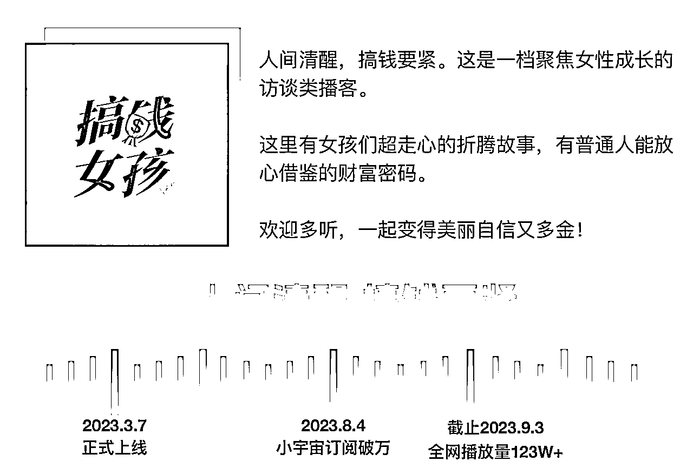
目前平台有：小宇宙、苹果podcast、喜马拉雅、网易云音乐、QQ音乐、荔枝。
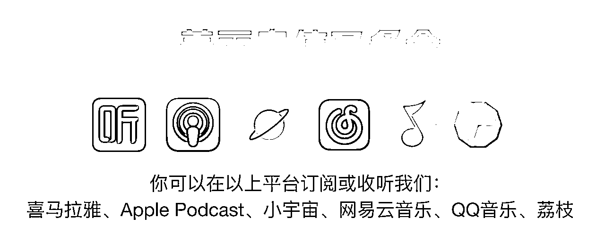
做播客
首先这不是一个赚大钱的项目，
首先这不是一个赚大钱的项目。
但是毫不影响有人在通过播客赚到钱！
这里借用一句亦仁说的话：
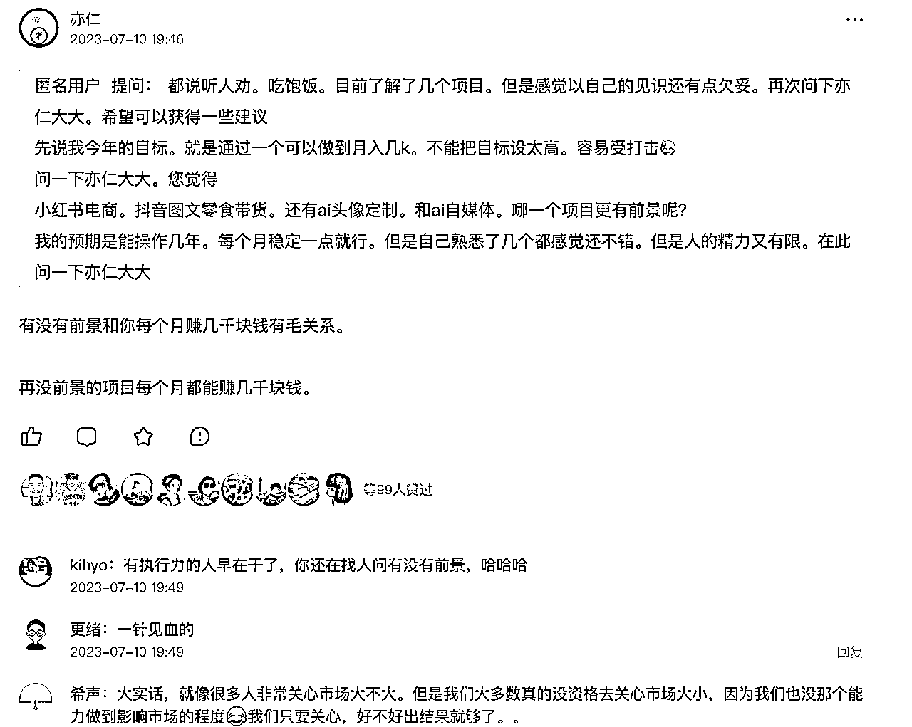
在观察从本期最热门的航海报名：
选品特训，有3800+人报名🔥
而播客报名的人只有一百多人🧊
但是要知道，被生财航海选中的选题，
就已经是被筛选过，当下热门且有前景的项目了！
这频文章，我会简单分享下，中文播客市场的快速增长趋势，选择这条航海，说明很有前瞻眼光
现在入局，快人一步！！👏👏
播客 (Podcast) ：
一词的来源，取自于苹果公司的便携播放器 iPod 和广播 (Broadcasting) 两个词的结合。
是指基于互联网，利用 RSS 等技术发布的、可供下载的聚合音频文件。
这样表达比较晦涩，目前大部分大多数对播客的理解是：
一种以「听」为优先考量创作的音频节目，简言之，播客是音频节目。
以中文播客用户为例：
注：数据来源《JustPod 2022 中文播客新观察》
用户画像：年轻、高知、有潜力
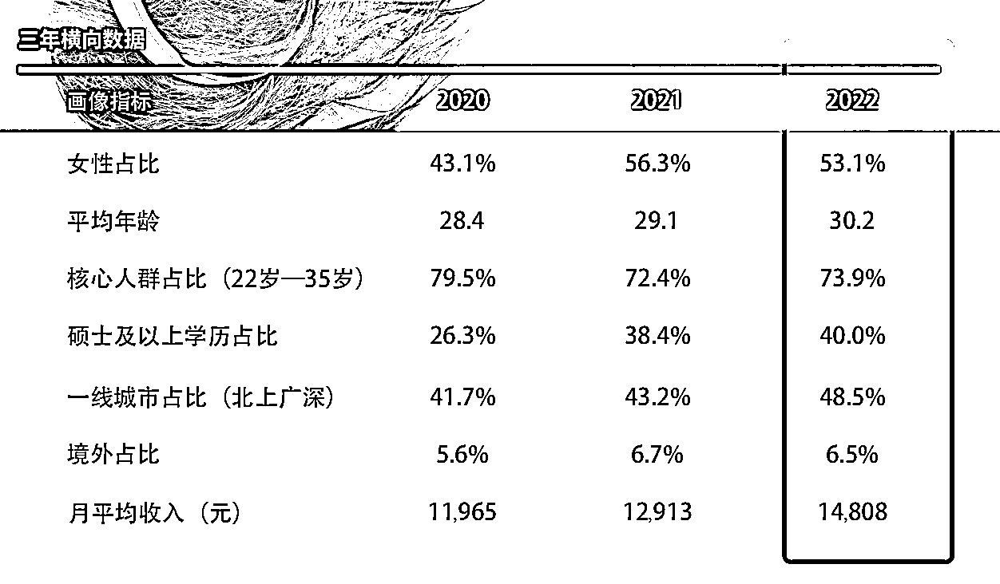
三年来，女性听众占比提升 10 个百分点，越来越多从女性进入
三年来，中文播客用户的本科学历基本维持在 50%，
而硕士比例明显上升，2022 年本科及以上学历已占 89.5%，凸显播客受众极高的高知含量；
三年来，播客受众月均收入稳步提升，2022 年人均已达到14,808 元，
主要人群也集中分布在一线和新一线城市，且一线城市增长明显。
相较其他媒介形态，播客受众具有极高的消费潜力。
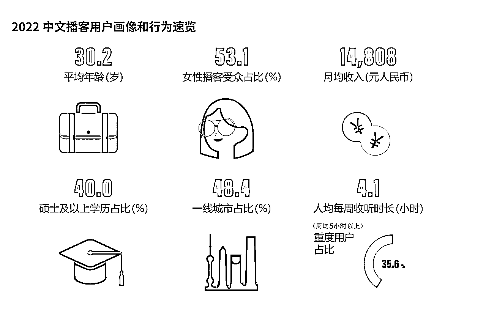
社会与人文>财经类>生活方式类>娱乐类>科技类>喜剧/脱口秀>个人与情感>有声书>广播剧
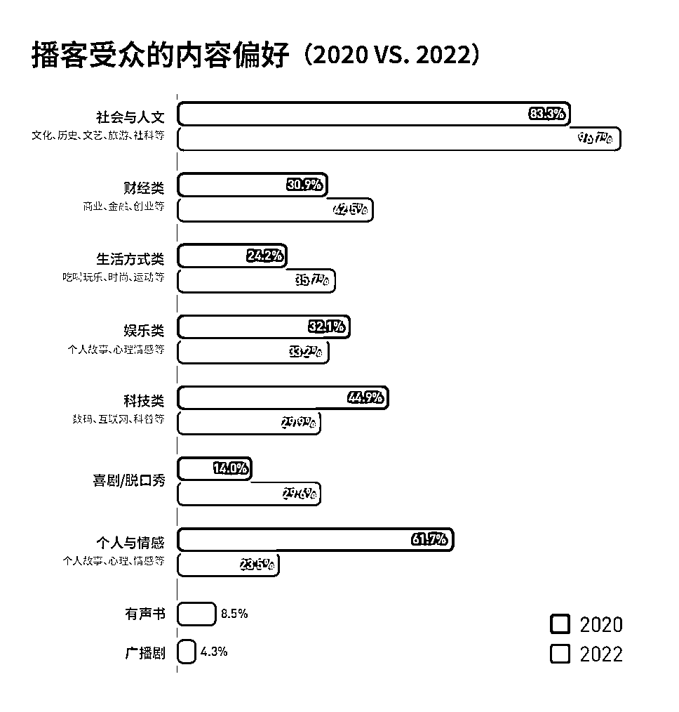
生财这一期新增了播客航海，选择这条航海的朋友，相信一定也觉察到，今年身边的朋友和关注的博主们都在开播客了。仿佛没有一档自己的播客节目都不好意思和人打招呼。
是的，根据全球播客搜索引擎「ListenNotes」 数据显示：
2020 年 5 月中文播客的 数量刚刚突破 1 万档，
而截至 2022 年 8 月，这个数字已经突破 2.5 万 档，三年来增长超 150%。
市场研究机构「eMarketer」调研 报告：2020 年中文播客受众人数为 6840 万，2021 年有 8600 万人，2022年中文播客听众规模已超1亿人次。同时，预测中国市场播客的消费规模在未来两年（2023-2024）会保持年均 15.8% 的增长势头，位列全球之首。
相信未来，播客还会继续保持快速增长，
现在入局的你，
说明真的是眼光太好了！👏
小宇宙，苹果播客Podcast，喜马拉雅，网易云音乐/QQ音乐，荔枝等，
包括腾讯视频号最近也上线了音频功能。
根据用户使用偏好排序：
小宇宙>苹果播客Podcast>喜马拉雅>网易云音乐/QQ音乐>荔枝等
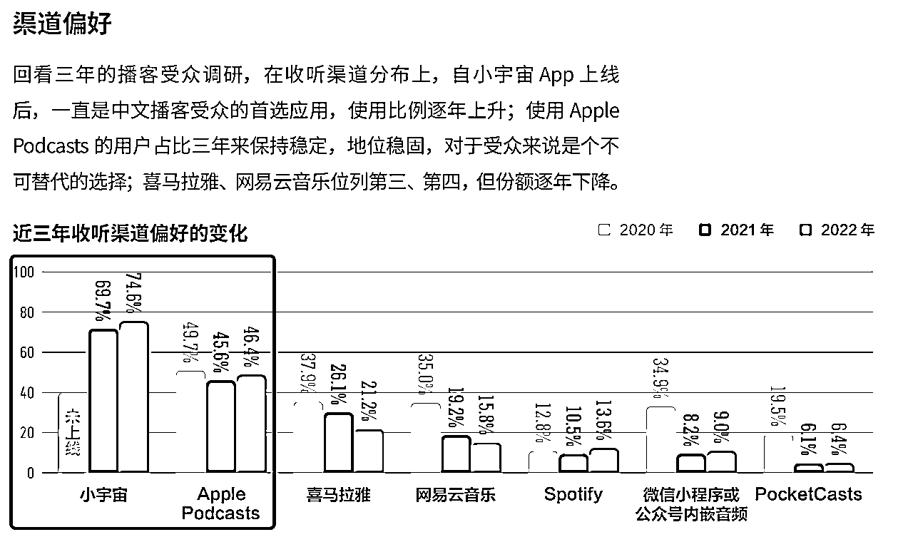
如果想要入局播客，小宇宙和苹果播客是需要优先经营的。
当然可以通过RSS进行分发，同步其他平台。
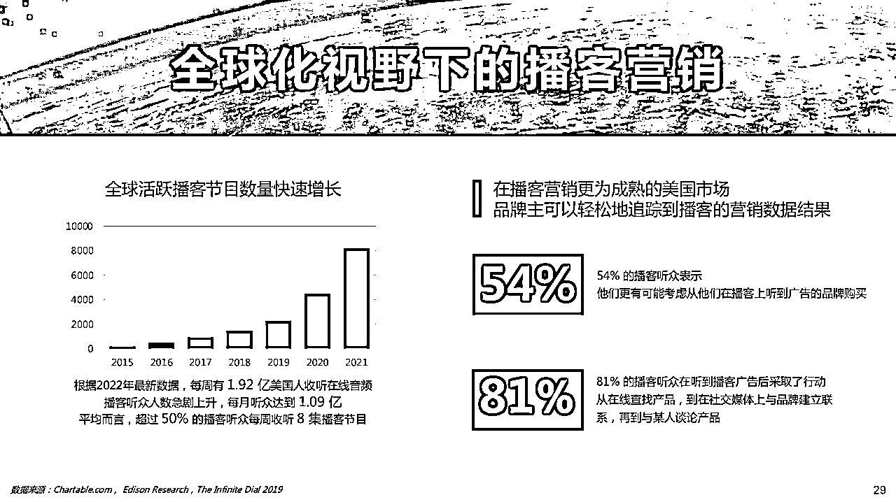
从内容角度：
短视频黄金7秒，没有吸引用户的点就会被刷走
而播客一集节目时长30分钟到一小时，甚至更久
播客用一种长时间、持续渗透的方式，占领用户心智。
同时从人群角度看，
中文播客受众收听年限高，收听粘性强，
更容易养成习惯，占据时间心智。
播客的商业化，和小红书相似，不是只有大号才能变现。
这里，我以搞钱女孩为例的变现案例，供参考
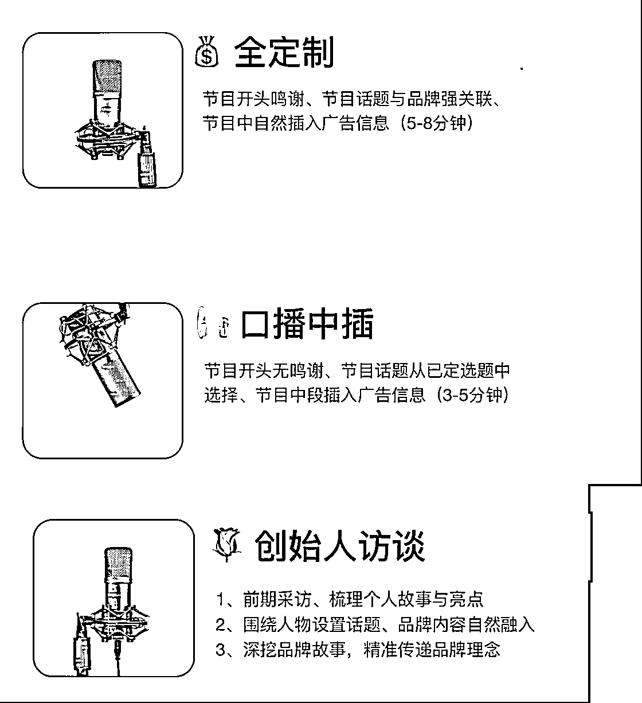
事实上，许多成功的播客主理人不是专业主持人、记者或KOL博主。
很多素人、职场人，自由职业者、学生都在运营一档播客节目，正在发声。
播客的魅力就在于，主要你的选题和内容足够有趣、特别。
就有被听到和收获自己听众粉丝的机会，
在互联网上就会有人听你的声音，听你分享的故事和观点。
以下是一些特点和品质，可以参考：
总的来说，普通人可以通过播客发出自己的声音，传递新鲜观点。
重要的是要选择一个你熟悉或对其有浓厚兴趣的主题，并以诚实、有趣和独特的方式与听众分享你的见解和故事。
🏆 无论你是谁，都可以在播客领域找到自己的位置。
在22年之前，我没有接触过播客。
因为，我连看视频都要二倍速甚至三倍速，
我根本耐不下性子，花时间一个小时听音频。
所以，不管是学习还是获取信息的习惯都没有播客
去年4月的情况大家懂得都懂，那个时候我很想做采访视频。并且参加了生财的小红书和视频号航海。但是受限线下、拍摄制作、差旅、人员等等，疫情当时条件不太充足。（其实主要还是缺钱）
另外，对于大部分素人来说，会有镜头焦虑。我想采访的嘉宾，大部分还是素人朋友，连koc或者博主都比较少。面对镜头会不会有压力？在意表情管理？会不会说真话？并且大多数人会有“演的成分”。
这也是一件需要考虑的事情。
1、试水体验
一次和朋友的播客录制体验，也是现在搞钱女孩的另一位主播@大花生
他邀请我，上他的个人节目，聊搞钱的经历。
（这期节目也是搞钱女孩的雏形了）
我发现这种聊天的方式挺简单的，
就是唠嗑，谁还不会？
但是很好的一点，在说话的过程，我们会自然而然的表达观点。
这种长时间，放松的，和朋友一样的聊天
所呈现的真诚，比写文章、按照脚本拍视频，都要最贴近真实个体。
2、播客在崛起
于此同时，是我发现身边很多人在做播客，觉察到一股兴起的力量
像加入生财圈子三年，经常刷风向标
就会对于市场热点的敏锐度比一般人更强
从去年我就开始关注一些圈内分享，播客被低估的说法
并且，播客很适合做IP的人积累内容。
播客对普通人的价值：
帮助IP低成本制作内容作品+积累影响力+额外收入/粉丝
3、贵人提醒
要感谢涛哥
去年的我极其迷茫，之前的我做了很多事情、信息差的生意，但我一直很焦虑，感觉自己一直在换项目，我自己没有垂直领域的积累，我感觉自己人是飘着的（不是我飘了的意思）不像生财其他圈友老板们，都有自己的项目。像提到沟通的根源老师、公众号写作明白师兄、知乎就想到家蒙、自习室王燕楠。
我问涛哥：
我觉得自己现在好像没有根，一直没有什么持续积累的事情。
我找不到自己的根，没有那种脚踏实地的感觉。
然后涛哥和我说的话，把我点醒，
什么叫根？你知道吗？根是四样东西。
你的团队；
你的钱，你的有效资产；
你的影响力是你的根；
第四个是你的技能。
一定是这四个东西是你的。那个项目不是。
除此以外，在那次见面会，涛哥在夜话局，分享播客和生态位的观点。
虽然那时候我还没决定要做播客，但是我听到了，我记下了。
以及，还也要特别感谢我的老师根源，和师兄明白。在去年上了根源老师的沟通课，和明白老师的写作训练营，帮我破除在输出和表达上的卡点，让原本不擅长做内容的我，积累了关于内容的手感，以及深度思考的能力。
曾经的我不擅长输出，写文章和拍视频对我很难。但是做播客让我找到了舒适区，发现和人聊天很快乐，并且这个内容制作出来还能对一些人愿意听，带来一些价值。
于是，命运的齿轮开始转动......
入局播客可以遵循以下步骤：
首先，选择一个你熟悉或对其有浓厚兴趣的主题。
这可以是你的爱好、专业领域、生活经验，或者任何你想分享的内容。
确保主题有足够的深度，可以为你的节目提供足够的内容。
如果你找不到，可以从这里先开始：打开小宇宙—首页—下滑—按分类找节目—点击查看
多浏览，先选定位，归类自己属于哪个板块
商业/文化/阅读/职场/科技/成长等......
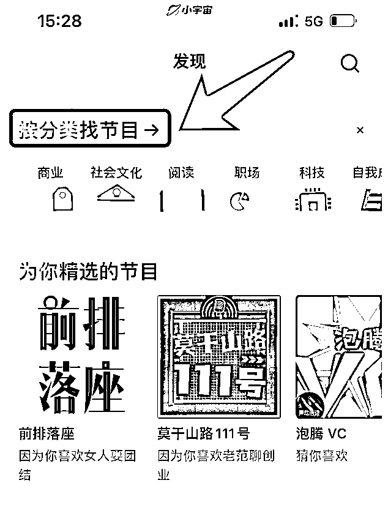
在制作播客之前，花时间研究对标账号。
如浏览每个分类下，被收录的节目，进行对标分析，记录名字+logo+标题特点，拆解节目风格。
也了解你的目标受众是谁，关心什么，以及你如何能够满足他们的需求。
制定一个内容计划，确定每期的主题和内容。
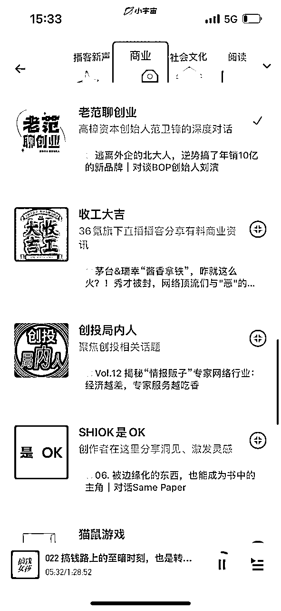
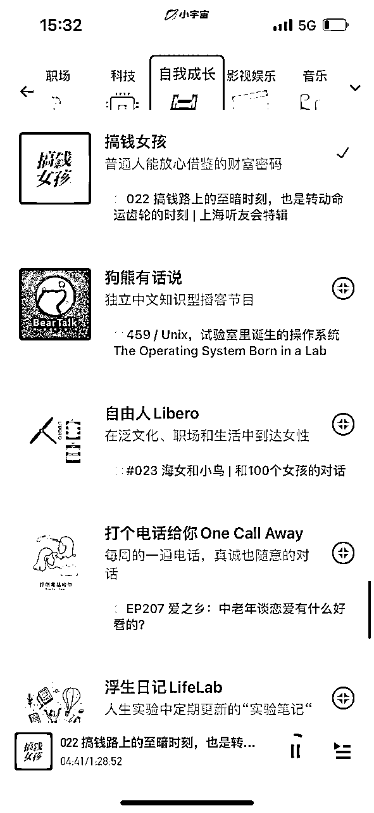
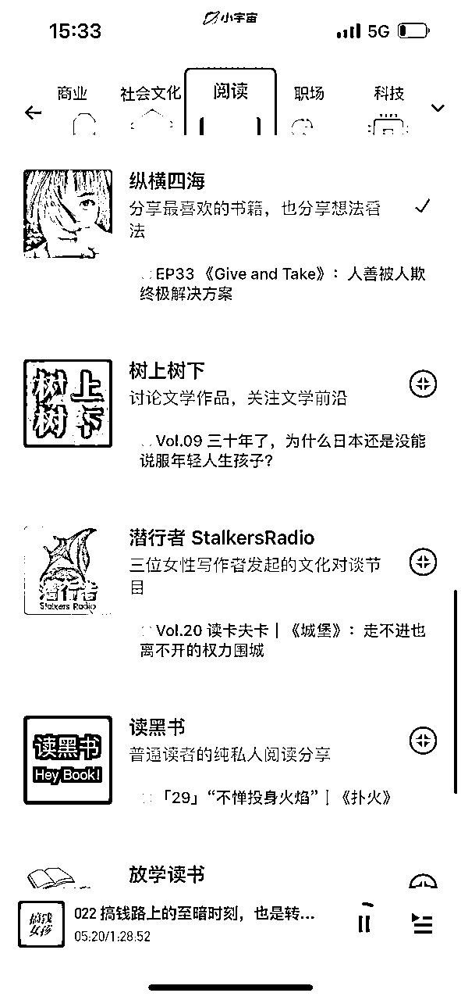
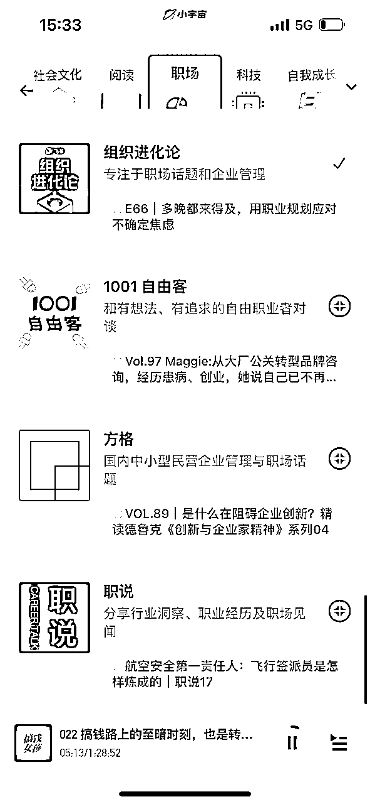
很多人的播客无法持续运营，来源于拍脑门，录制一两期就断更了。
为了能保证节目持续更新，我建议大家至少10期节目的素材/选题储备。
随时有灵感，就放进选题库里，不需要多完整。
当需要进行排期制作的时候，打开看看，选一个出来延展，完成提纲和邀约。
这么做的灵感，我小时候最喜欢旅游卫视了，周一到周日，每天不同时间，都有不同的专栏在播节目。按照这个逻辑打造播客频道，就完全不用担心，听众会厌倦，灵感会枯竭。你规划好，就不会开天窗断更了。
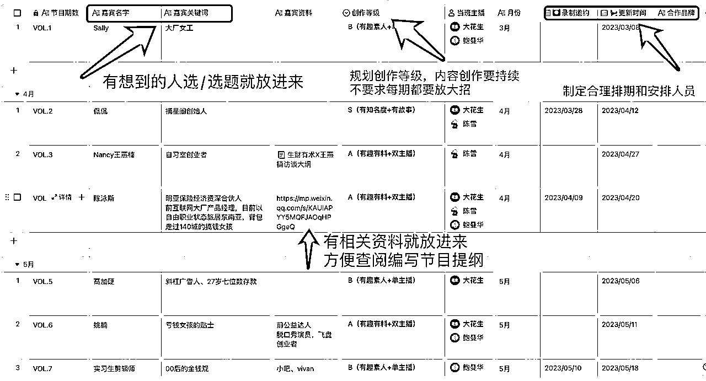
（“选题库”灵感来源小红书家居博主Tshos分享，觉得太强大了，立刻上手测试，用飞书搭建了此版本。）
善用标签分类，梳理你想讲的主题。比如我们关注：女性创始人、职场人找副业、宝妈再就业等。
把嘉宾和选题按照标签分类好，就可以规划全局的计划，是本月都分享职场，或者一每个标签都有有个代表。
这样保证你在这个相关垂类下，一直都有输出积累。
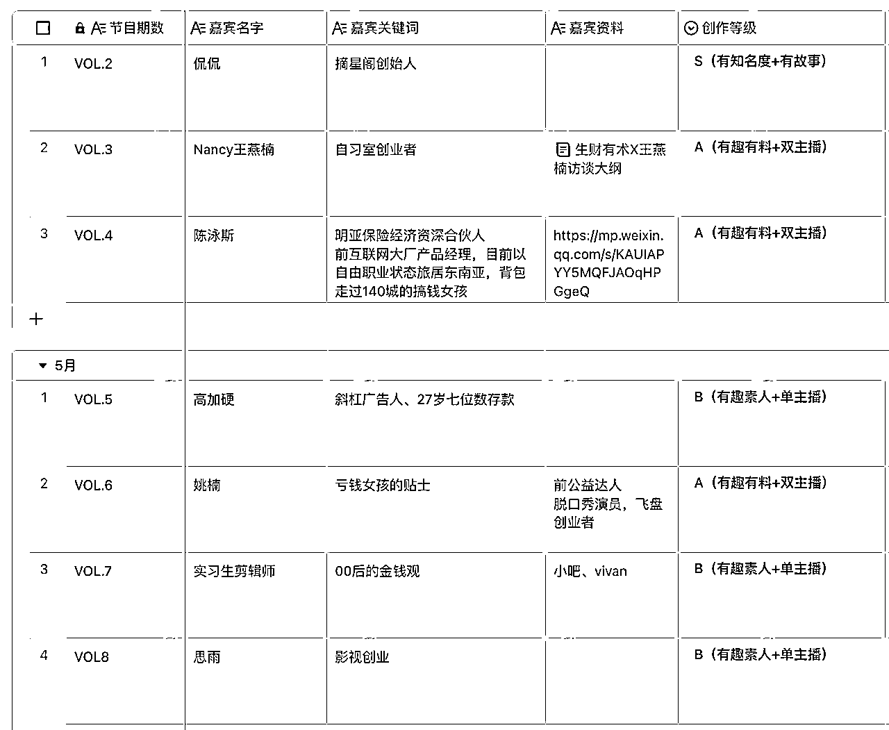
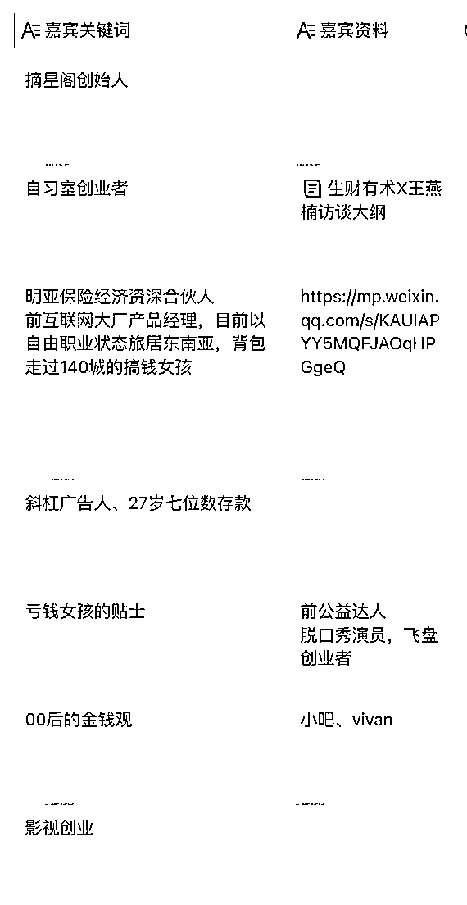
至少每月都提前规划好下个月的选题，
任何碎片化时间都可以琢磨和补充。
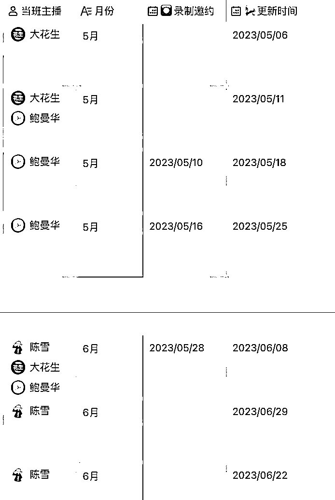
如果是本周要更新才想起要录制，那内容就非常随机，取决于今天发生了什么故事和见了什么人，而且就算遇到有很好的选题，也没有足够的时间去梳理，就会浪费掉一些好选题。
每个选题在立项时，打上S、A、B、的标签。配合排期，保证输出质量稳定。比如每月至少有一篇S级的文章，两篇A级，一篇B级，合理分配个人和团队精力。
这样不会每天都在痛苦的憋S级，想要放大招，给自己过大压力。也不会连续每天都是B级被喷划水，内容质量降低。
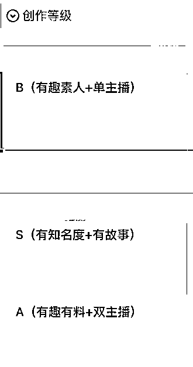
创作者不能用力过猛，流水不争先，争滔滔不绝。
对于大多数人，前期不需要购买非常昂贵的设备，可以直接用目前已有设备，如iPhone
只要在录制前，确保环境安静，没有噪音干扰之类的硬伤即可。
分享几个提高录制音质的tips：
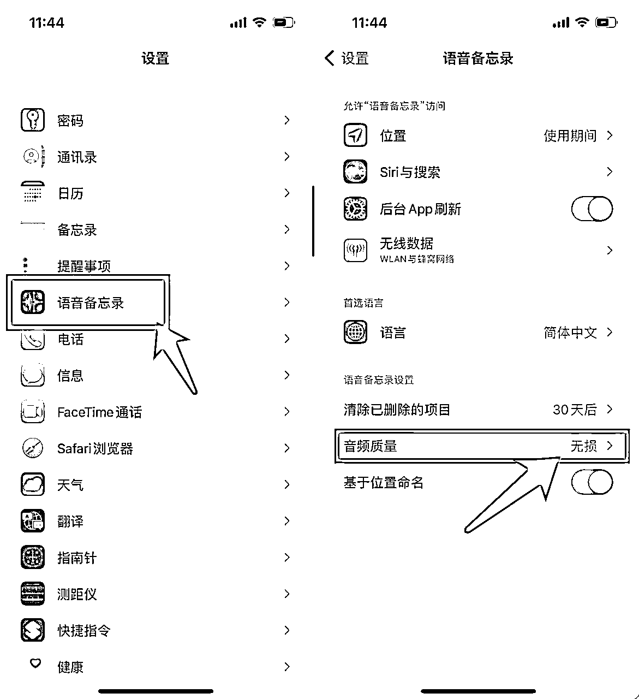
如果用iPhone录音，最好先进入【设置-语音备忘录-音频质量】界面把音质设成【无损】。
防止喷麦，手机最好放置在身体旁侧，不要和人正对，位置 (如上图）
具体采访注意事项，可以参考：
录制完成后，使用声音编辑工具来编辑和优化音频，确保音质清晰，内容连贯。
将你的节目上传播客平台，如小宇宙、Apple Podcasts，等前面提到过的主流播客平台。
起标题，编辑Shownotes，和关键词，以便听众能够对你的节目产生兴趣，和搜到你的节目。
同时，在社交媒体、微博、小红书、朋友圈、即刻等渠道上分享你的节目，扩大听众圈子。
新手做播客，很可能遇到花很长时间做节目，结果节目上线播放量个位数的情况。
我们能做哪些事情，杜绝这种情况发生呢？我们可以拆分下步骤。
在小红书的航海，圈友分享过，小红书「关键词布局」的玩法，但是在播客生态里，几乎作用不大，因为很少有用户习惯，是为了获取某类信息—搜索—收听，毕竟一期播客的时长太久。
那站内的流量在哪？以小宇宙为例：在平台首页推荐，和别人的节目里。这里是一群已经养成播客习惯用户，只要节目内容好，就会更容易关注。
小宇宙官方推荐 ：首页的编辑精选，每天三条，最热榜、锋芒榜、新星榜每天各10条 。
关于榜单的推荐机制，和具体的榜单内容可在小宇宙首页查看。
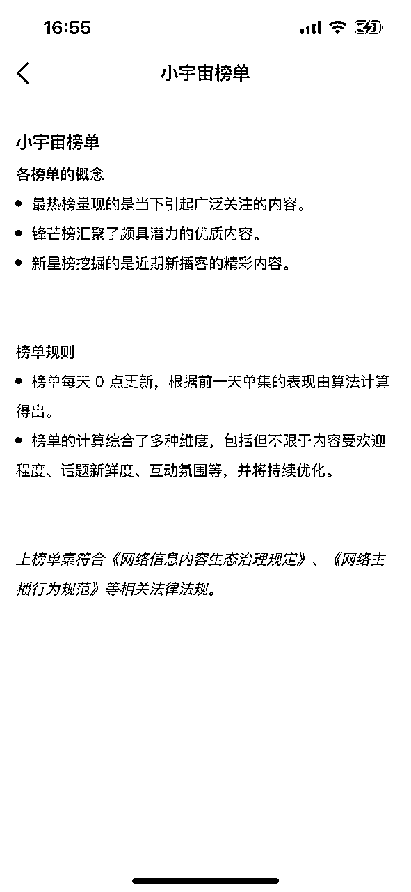
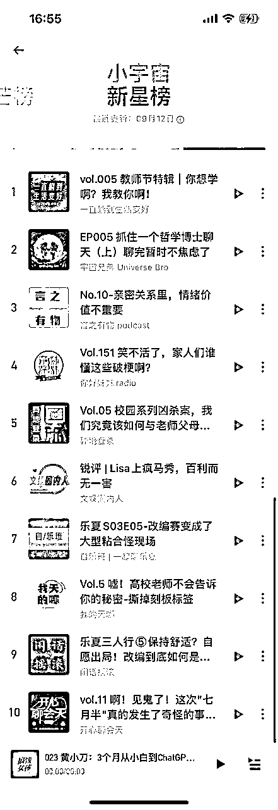
（以今日榜单为例截图参考）
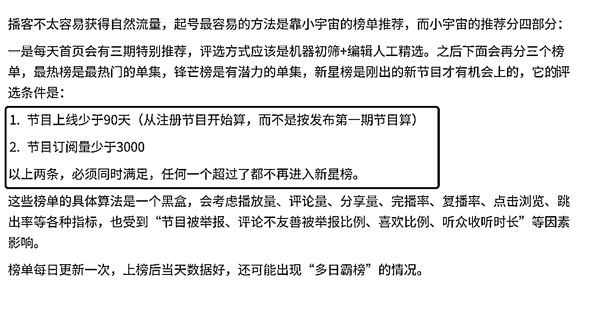
（关于榜单的算法推荐机制，坊间的拆解，仅供参考。）
因为新号一般不会有人关注到，你就只能靠首页推送的流量。搞钱女孩在新手期的每一期节目就是都上了新星榜，上线就会平台首页自动给你导流。
新手冷启动最好的利用好平台推荐红利，开号初期更新的频繁一点（至少周更）。在三个月内多被推荐，做到3000订阅，这样账号就起来了。
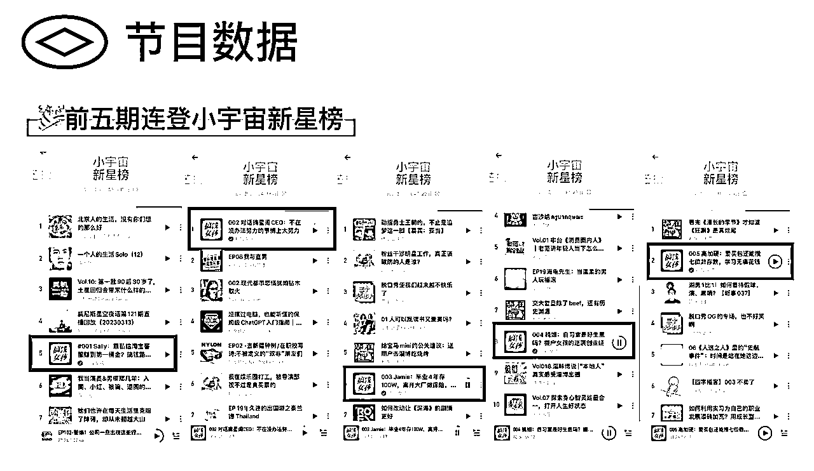
找正在做播客的朋友，多上节目互相串台，原理等同于，早期公众号和小红书红利期，博主互推，一起抱团增长，合作有助于播客持续成长和发展。
而且，串台可以创造有趣的跨界内容，不同主播风格不同，合作讨论不同领域的主题，这可以吸引广泛的听众，跨界串台可能会产生更多的共鸣和分享。
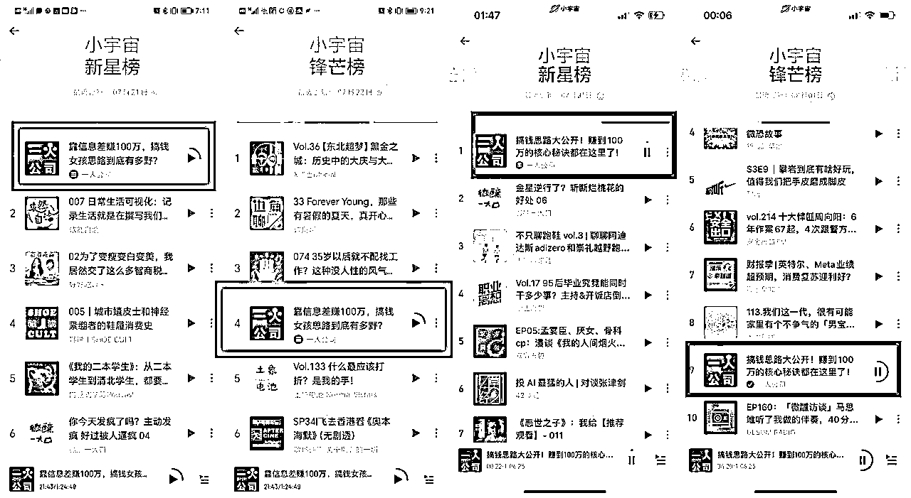
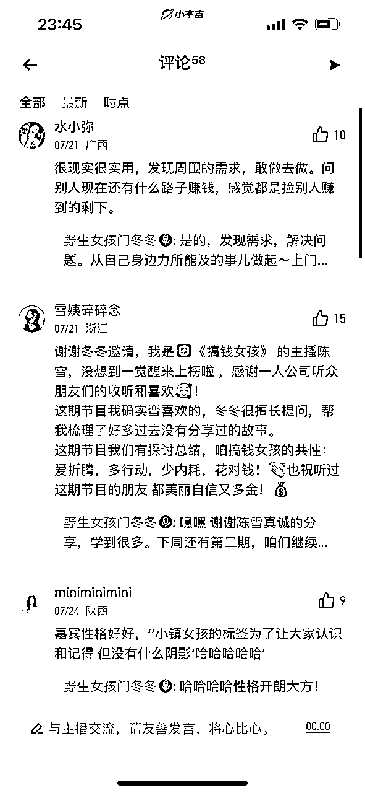
（和朋友上她播客录了两期节目，获得连续四次榜单推荐，并且霸榜两期新星榜一）
我最近看到有的节目，才一两期 就有好几千，过万的订阅！！还觉得很神奇，然后一看，人小红书 好几十万粉丝，微博几百万粉丝，嚯 就不奇怪了。博主们做播客，会自带流量进场。
另外在小红书和即刻搜索，“播客推荐”有关的笔记内容流量都不错，可以多主动分享自己的节目。
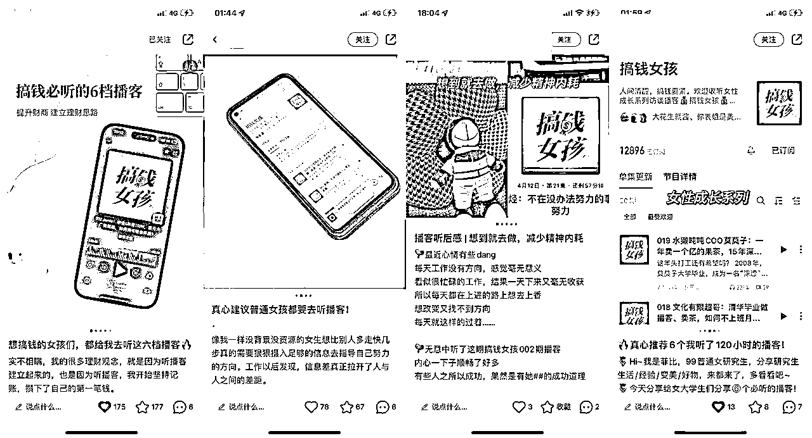
（在小红书上被一些听友自发安利）
在节目上线，可以私聊分享给朋友，或者发朋友圈，邀请朋友关注。以及，还可以邀请朋友录制节目，朋友们的积极分享，也会增加你的潜在听众。
在内容定位已经思考好的情况下，可以参考以上节点，SOP化，共公域和私域积累粉丝，帮助播客节目增长和传播，顺利起号。
以上到这里，希望你👏已经完成了或者准备开启，你的播客节目的制作和传播啦！
最后还要感谢生财有术，给我机会让我分享。
在加入生财三年的时间，赚钱路上少走了很多弯路，
并且有幸得到很多贵人相助，也积累了一些经验、心得。
还结缘根源老师，明白老师一起合伙做一个社群：日新月异俱乐部。
最后如果圈友感兴趣播客赛道，或者想要自荐/推荐搞钱女孩的嘉宾，欢迎加我Yuki_c_1224交流~
回听过往采访圈友故事
👉楠姐：自习室是好生意吗？棚户女孩的逆袭创业经
👉谢无敌：2023小红书变现指南！从金融到自媒体，帮3000+素人账号变提款机
👉泳怡：从伸手要到做快团团月入五位数，94年宝妈如何高能逆袭
👉黄小刀：3个月从小白到ChatGPT大佬，我们如何在风口中抓住机遇